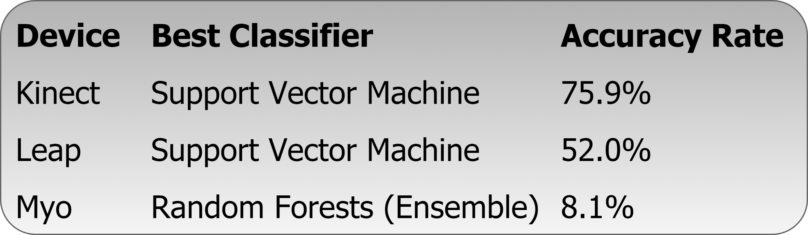

Over the last several years, the scene of the hand gesture recognition field has changed due to the emergence of several motion-sensing devices, such as the Myo, the Microsoft Kinect, and the Leap Motion Controller. These devices have been successful in their intended use cases, but sign language recognition provides more of a challenge due to its complexity.
The project aims to explore how to build a tool for teaching South African Sign Language (SASL) to the hearing in South Africa. In particular, this study will examine the ability of three gesture recognition devices in conjunction with various machine learning techniques to identify gestures from the SASL alphabet. The results of this study will inform future development of a tool for teaching SASL.
The goals for this project, for all authors, were as follows:
- Investigate specific machine learning classifiers (as highlighted in previous literature) and their effectiveness in recognising SASL alphabet gestures
- Attempt to minimise errors during classification, and analyse errors and their reasons for occurring, with regard to the each device and/or classifier
- Obtain a large dataset of alphabet gestures, using the Kinect, the Leap, and the Myo devices, to aid the previous investigations, as well as future investigations in the field
 Extremely varied results were obtained. Support vector machines proved to be the most promising for both the Kinect and Leap devices. Future work should look into whether combinations of devices can boost low performances, such as that of the Myo.
In terms of the Kinect, better feature extraction techniques, which track nuances such as finger positions and hand angles, should be explored in future studies. Along with this, an improved gesture recording method would thus need to be implemented. Dynamic gestures were also not well accounted for in this study, and should be better catered for during gesture recording and classification.
For the Leap data, the various machine learning techniques gave diminishing returns, capped at about 50% accuracy. This result was investigated, and the real world data that was recorded was found to be the bottleneck. An effective workaround was found by only considering frames of a high enough confidence, and this could inform future data gathering.
MYO